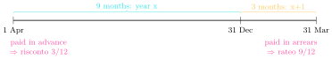

Definition
For amounts whose service period straddles the year end:
| Item | Italian | Settled | Belongs to | Side |
|---|---|---|---|---|
| Accrued income | rateo attivo | later | current period | asset |
| Accrued expense | rateo passivo | later | current period | liability |
| Prepaid expense | risconto attivo | already | following periods | asset |
| Deferred income | risconto passivo | already | following periods | liability |
Rule of thumb: rateo = matured now, cash later; risconto = cash now, matures later. (Some material reverses the two verbal definitions; the rental examples and OIC 18 support the version above.)
Worked example
Rent of an annual contract 1 April x – 31 March x+1; year end 31 December x: nine months belong to year x, three to year x+1.
- Rateo (rent paid in arrears, on 31 March): landlord Y has collected nothing on 31 December but has earned 3/4 of the rent → accrued income (rateo attivo) for 3/4. With annual rent 12,000: 9,000. The tenant records an accrued expense (rateo passivo) of 9,000.
- Risconto (rent paid in advance, on 1 April): tenant Y paid 12 months but used only 9 → the 3 remaining months are a credit towards next year: prepaid expense (risconto attivo) 3,000; current rent expense 9,000. The landlord records deferred income (risconto passivo) 3,000.
Pitfall
First identify the party (tenant or landlord), the payment date and the service interval. The rateo here is nine months, the risconto three months — both measure the part on the "wrong" side of the year end relative to the cash. Ordinary unpaid invoices are payables, not ratei.
Recall
Draw the rental timeline; classify the four cases for tenant and landlord with amounts.
Picture

Compare the payment date with the year end to choose rateo or risconto.